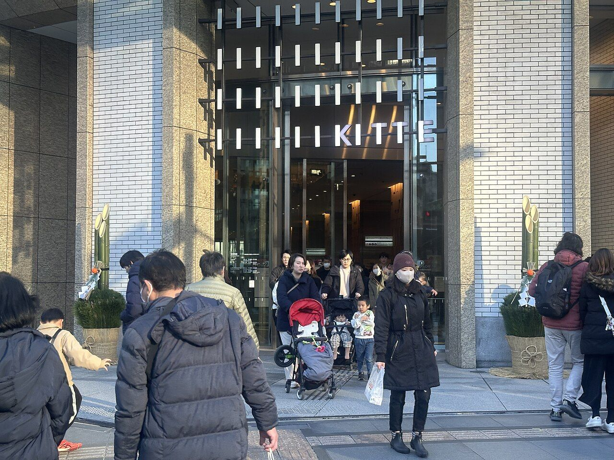

先看日历：哪天开，哪天关
元旦三天是日本一年里最安静的几天。独立小店多半关门，神社寺庙和商场反而最热闹。行程按营业规律来排，比按景点排更重要。

按气质挑街区
每个街区按「轻奢、现代、古典、生活气息」各打 1 到 5 分。先在坐标图里找到想要的感觉，再往下看每个街区的必逛点和新年营业情况。
五日路线
以 1/1 住芝公园、1/2 起住东京巨蛋酒店为前提排的。每天只排一到两个街区，留出排队和吃饭的时间。点餐厅名可以跳到下面的餐厅卡片。
餐厅：从老铺到轻奢
每家都标了价格、预约方式和新年营业情况。新年安排大多参考 2026 年元旦，2027 年的一般 12 月中下旬才公布，出发前请再核对一次。
类型
档次
新年营业
区域
1 月 1 日，去哪吃饭
元旦当天是全程最难吃饭的一天。下面这些地方按 2026 年的经验是开门的。
出发前要知道的
订位、付款、交通和新年礼仪，几条最容易踩坑的。